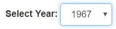
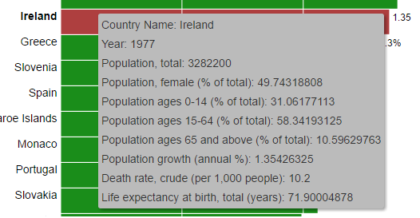
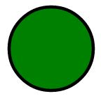
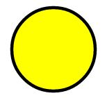
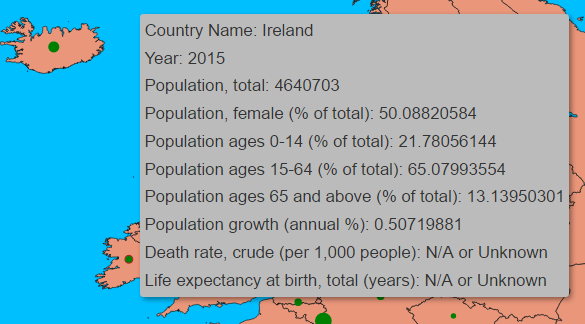
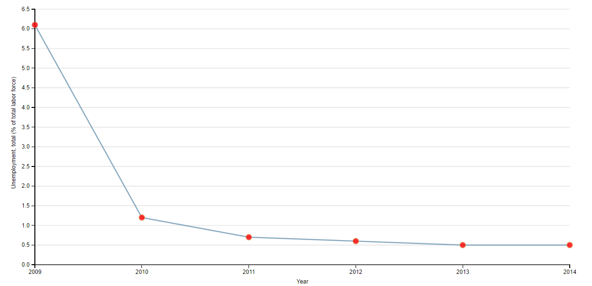

Welcome
Thank you in advance for your time spent participating in this online experiment for my Computing Master's Thesis. I would like that you complete at least one of the tasks below, but I would be forever grateful if you could complete both.
Before starting a task please be sure that you read the general instructions below:
- Please read the Study information description and the Consent form
- Please do not use a tablet or a smartphone. These tasks are intended to be completed using a desktop or a laptop
- Please make sure that your browser's window is maximized
- Please don't open new tabs, web sites, or apps during the experiment
- This online experiment is composed of several steps. Please do not try to go back to a previous step/screen while completing the experiment!
- Please be sure that you won't be interrupted while completing each task
- Give your best!
Thank you!
Please tell us a litlle about yourself before starting the task!
Instructions - Task 1
You are going to have access to a dataset showing the population growth, for the past decades, of most territories in the euro zone (source: World DataBank).
At the top of the page you will be provided with a dropdown list () which will allow you to choose the year you want to explore. After selecting a year a bar chart will be displayed, where each bar represents a single territory. The territories will be ordered from the territory with the largest Population Growth % Increase to the territory with the largest Population Growth % Decrease.
If you place your mouse pointer over a territory’s bar you will be able to see more information regarding population statistics for the territory and for the previously selected year. The following image shows extra info for Ireland that can be visualized by “mousing hover” Ireland’s bar:
In order to complete this task you will have to accomplish the 2 following goals using the data provided (don’t worry! You’ll have access to the goals’ description while exploring the data set):
- Please find out if the following sentence is true or false according to the data you are going to access: “Statistics show that, every time a decade ends, (e.g. 1969 to 1970; 1979 to 1980) Ireland’s Death rate, crude (per 1,000 people) decreases, whereas Life expectancy at birth, total (years) increases.”
- Statistics show that, every time a decade ends, (e.g. 1969 to 1970; 1979 to 1980) Ireland’s Death rate, crude (per 1,000 people) decreases, whereas Population growth (annual %) increases. according to the data you are going to access, which years contradict this theory?
I would like that you take your time exploring the dataset in order to answer this questions. When you do please press this button () in order to move forward and a multiple choice questionnaire will be available to access your performance. Please note that if you feel you can’t find the answer to one or any of these goals you can press this button anyway since later you’ll have the option of saying that you were not able to reach the goal’s answer, but I would like that you give your best!
I strongly advise you to use a paper and a pen during the task! Please be honest when answering the post task questions.
Instructions - Task 1
You are going to have access to a dataset showing the population growth, for the past decades, of most territories in the euro zone (source: World DataBank).
The data will be displayed through a map where circles are centered in the middle of each territory. Each circle’s size is proportional to the respective territory’s Population Growth %. A green circle  is used for Population Growth % positive values and a yellow circle  is used for Population Growth % negative values. If a territory doesn't have a circle for a specific year it means that the Population Growth % was near 0%. After a brief animation showing the Population Growth % variation through the past years, you will be provided, at the top of the page, with a dropdown list () which will allow you to choose the year you want to explore. After selecting a year the circles in the map will be updated according to the data of the selected year.
If you place your mouse pointer over a territory’s circle you will be able to see more information regarding population statistics for the territory and for the previously selected year. The following image shows extra info for Ireland that can be visualized by “mousing hover” Ireland’s circle:
In order to complete this task you will have to accomplish the 2 following goals using the data provided (don’t worry! You’ll have access to the goals’ description while exploring the data set):
- Please find out if the following sentence is true or false according to the data you are going to access: “Statistics show that, every time a decade ends, (e.g. 1969 to 1970; 1979 to 1980) Ireland’s Death rate, crude (per 1,000 people) decreases, whereas Life expectancy at birth, total (years) increases.”
- Statistics show that, every time a decade ends, (e.g. 1969 to 1970; 1979 to 1980) Ireland’s Death rate, crude (per 1,000 people) decreases, whereas Population growth (annual %) increases. according to the data you are going to access, which years contradict this theory?
I would like that you take your time exploring the dataset in order to answer this questions. When you do please press this button () in order to move forward and a multiple choice questionnaire will be available to access your performance. Please note that if you feel you can’t find the answer to one or any of these goals you can press this button anyway since later you’ll have the option of saying that you were not able to reach the goal’s answer, but I would like that you give your best!
I strongly advise you to use a paper and a pen during the task! Please be honest when answering the post task questions.
Instructions - Task 2
You are going to have access to a dataset showing the unemployment statistics, for the past years, of most territories in the euro zone (source: World DataBank).
The data will be displayed trough time series charts similar to this one:
 You will be provided, at the top of the page, with a dropdown list -  - that will allow you to choose the territory you want to explore.
- that will allow you to choose the territory you want to explore.
If you place your mouse pointer over a year’s red circle you will be able to see more information regarding the territory’s unemployment statistics of that year. The following image shows extra info for the year 1991 that can be visualized by “mousing hover” 2010’s circle:

In order to complete this task you will have to accomplish the 2 following goals using the data provided (don’t worry! You’ll have access to the goals’ description while exploring the data set):
- Knowing that Scandinavia contains the following 5 territories: Denmark; Norway; Sweden; Finland; and Iceland. Please find out which of these territories had a larger Long-term unemployment (% of total unemployment) variation between 2012 and 2013 and how much was that variation (absolute value).
- Consider the following Southern Europe countries: Portugal; Spain; Italy; and Greece. Which one had the biggest Unemployment, female (% of female labor force) in 2014? For that country, the Unemployment, youth total (% of total labor force ages 15-24) increased or decreased between 2012 and 2013?
I would like that you take your time exploring the dataset in order to answer this questions. When you do please press this button () in order to move forward and a multiple choice questionnaire will be available to access your performance. Please note that if you feel you can’t find the answer to one or any of these goals you can press this button anyway since later you’ll have the option of saying that you were not able to reach the goal’s answer, but I would like that you give your best!
I strongly advise you to use a paper and a pen during the task! Please be honest when answering the post task questions.
Instructions - Task 2
You are going to have access to a dataset showing the unemployment statistics, for the past years, of most territories in the euro zone (source: World DataBank).
The data will be displayed trough a table containing all information for the selected year. You can select a year by using the dropdown list available at the top of the page () which will allow you to choose the year you want to explore.
In order to complete this task you will have to accomplish the 2 following goals using the data provided (don’t worry! You’ll have access to the goals’ description while exploring the data set):
- Knowing that Scandinavia contains the following 5 territories: Denmark; Norway; Sweden; Finland; and Iceland. Please find out which of these territories had a larger Long-term unemployment (% of total unemployment) variation between 2012 and 2013 and how much was that variation (absolute value).
- Consider the following Southern Europe countries: Portugal; Spain; Italy; and Greece. Which one had the biggest Unemployment, female (% of female labor force) in 2014? For that country, the Unemployment, youth total (% of total labor force ages 15-24) increased or decreased between 2012 and 2013?
I would like that you take your time exploring the dataset in order to answer this questions. When you do please press this button () in order to move forward and a multiple choice questionnaire will be available to access your performance. Please note that if you feel you can’t find the answer to one or any of these goals you can press this button anyway since later you’ll have the option of saying that you were not able to reach the goal’s answer, but I would like that you give your best!
I strongly advise you to use a paper and a pen during the task! Please be honest when answering the post task questions.
Execute Task
- Goal 1 - Please find out if the following sentence is true or false according to the data you are going to access: “Statistics show that, every time a decade ends, (e.g. 1969 to 1970; 1979 to 1980) Ireland’s Death rate, crude (per 1,000 people) decreases, whereas Life expectancy at birth, total (years) increases.”
- Goal 2 - Statistics show that, every time a decade ends, (e.g. 1969 to 1970; 1979 to 1980) Ireland’s Death rate, crude (per 1,000 people) decreases, whereas Population growth (annual %) increases. according to the data you are going to access, which years contradict this theory?
- Goal 1 - Please find out if the following sentence is true or false according to the data you are going to access: “Statistics show that, every time a decade ends, (e.g. 1969 to 1970; 1979 to 1980) Ireland’s Death rate, crude (per 1,000 people) decreases, whereas Life expectancy at birth, total (years) increases.”
- Goal 2 - Statistics show that, every time a decade ends, (e.g. 1969 to 1970; 1979 to 1980) Ireland’s Death rate, crude (per 1,000 people) decreases, whereas Population growth (annual %) increases. according to the data you are going to access, which years contradict this theory?
Population growth (annual %)
- Goal 1 - Knowing that Scandinavia contains the following 5 territories: Denmark; Norway; Sweden; Finland; and Iceland. Please find out which of these territories had a larger Long-term unemployment (% of total unemployment) variation between 2012 and 2013 and how much was that variation (absolute value).
- Goal 2 - Consider the following Southern Europe countries: Portugal; Spain; Italy; and Greece. Which one had the biggest Unemployment, female (% of female labor force) in 2014? For that country, the Unemployment, youth total (% of total labor force ages 15-24) increased or decreased between 2012 and 2013?
- Goal 1 - Knowing that Scandinavia contains the following 5 territories: Denmark; Norway; Sweden; Finland; and Iceland. Please find out which of these territories had a larger Long-term unemployment (% of total unemployment) variation between 2012 and 2013 and how much was that variation (absolute value).
- Goal 2 - Consider the following Southern Europe countries: Portugal; Spain; Italy; and Greece. Which one had the biggest Unemployment, female (% of female labor force) in 2014? For that country, the Unemployment, youth total (% of total labor force ages 15-24) increased or decreased between 2012 and 2013?
Please answer the following questions regarding the task you have just performed
Please answer the following questions regarding the task you have just performed
Thank you very much for completing this task! Before you leave I would like that you self-assess yourself regarding the following dimensions:
Thank you!
Thank you very much for completing this task!
I really appreciate your time and help! If you want to be informed of the outcome of my thesis research, please enter your e-mail before pressing the Home button